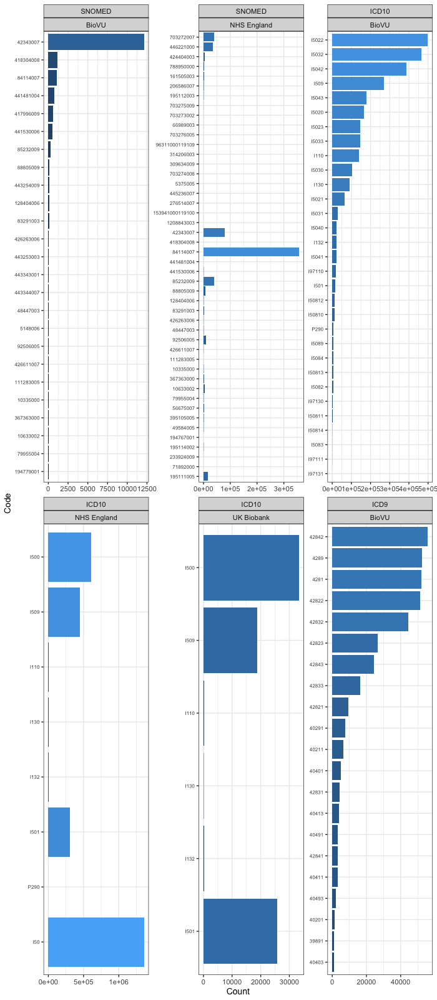
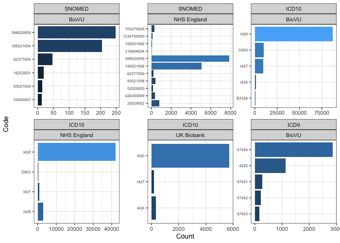
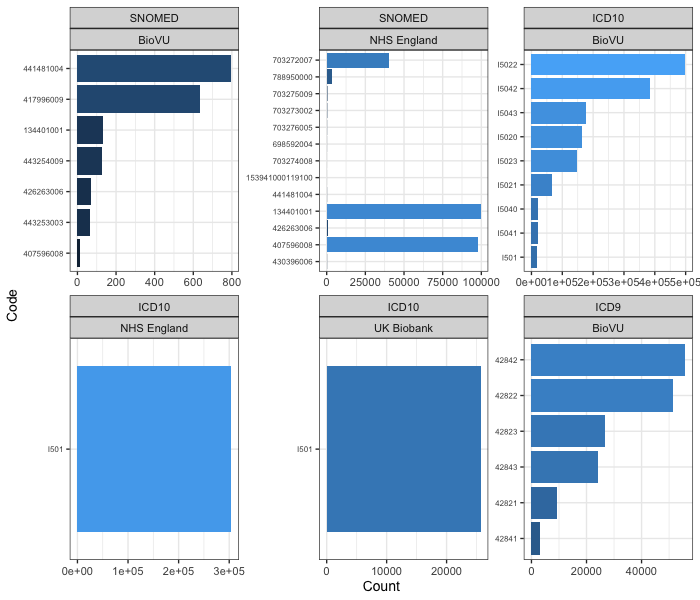
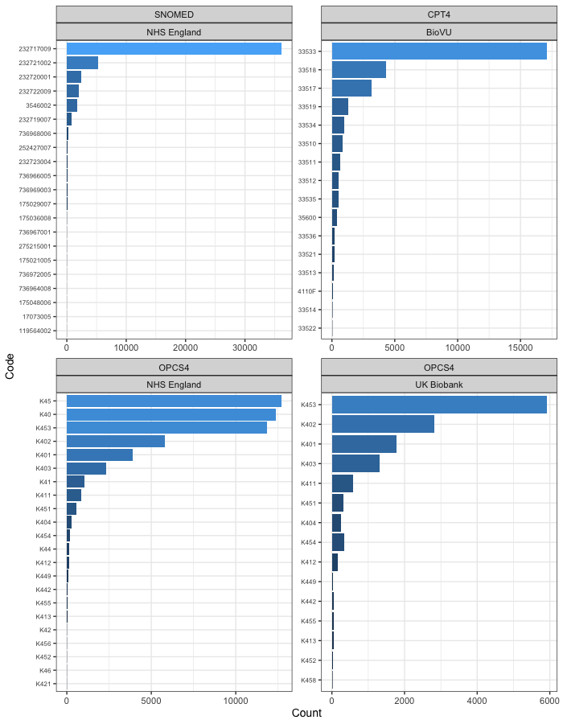
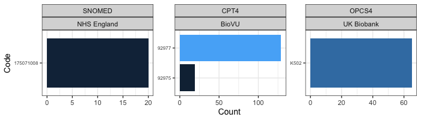
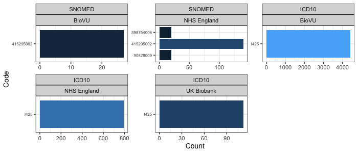

HERMES 3.0
hermes_3.RmdAim
To perform a multi-ancestry sex-stratified genome-wide association study (GWAS) meta-analysis of HF, ischaemic HF, non-ischaemic HF, DCM, and NICM.
Rationale
Heart failure (HF) has shown substantial sex differences in its clinical presentations and risk profiles, but much remains unclear about HF in women.1–3 Sex-stratified genome-wide association studies (GWAS) have provided mechanistic insights into diseases with known phenotypic sex differences.4,5 This project aims to identify sex-specific HF risk loci, by performing a sex-stratified GWAS of all-cause HF and subtypes stratified by ischaemic aetiology, including an analysis of the X chromosome (ChrX). This research, particularly the analysis of non-ischaemic HF, is envisioned to build new knowledge on the sex-specific genetic basis of HF and identify non-traditional risk factors.
HF amongst individuals with congenital heart disease represents a distinct entity, largely due to structural malformations during embryonic cardiogenesis. Whilst most cases remain unexplained, genetic association studies have highlighted variants in important patterning genes as potential causal factors.6 In this study, we are interested in why hearts that seemingly developed normally then go on to fail. Given the often dramatic structural abnormalities seen in congenital heart disease and likely distinct pathophysiology (embryonic patterning), we have excluded this subgroup from our HF definition.
Chronic respiratory disease, predominantly COPD, is a common comorbidity amongst patients with diagnosed HF.7 Whilst outcomes are poorer in this HF subgroup, standard HF therapeutics offer similar prognostic benefits suggesting shared underlying pathophysiological mechanisms.7 Diagnosis of either, or both, conditions can be challenging due to overlapping clinical signs and symptoms. However, chronic respiratory disease and HF share multiple upstream risk factors - smoking being the most obvious - therefore conditioning on chronic respiratory disease status has the potential to induce bias in the data. Therefore, we have not excluded chronic respiratory disease patients from our HF definition, as long as they also have a definite, non-ambiguous, HF diagnostic code.
Study phenotypes
| Phenotype | Name | Brief Description |
|---|---|---|
| Phenotype 1 | All HF | Clinical syndrome of HF, any cause or manifestation |
| Phenotype 2 | Ischaemic HF | HF comorbid with antecedent MI/revascularisation/ICM |
| Phenotype 3 | Non-ischaemic HF | HF without MI/revascularisation |
| Phenotype 4 | DCM | Dilated cardiomyopathy |
| Phenotype 5 | NICM | Non-ischaemic cardiomyopathy (DCM or reduced LVEF <50%) |
Methods
Subjects: Individuals of European, South Asian, East Asian, African, Hispanic, and Indigenous American ancestries who are free of congenital heart disease, and with or without prevalent HF.
Genotypes: Autosomal and ChrX SNPs (preferably imputed against HRC, TOPMED, or population-specific haplotypes).
Phenotypes: Three phenotypes as described above (minimum of 500 cases and 500 controls in each sex for each ancestry-specific GWAS analysis).
Return of results
The Cardiovascular Knowledge Portal team have developed a private data repository for HERMES3 with functionality to validate file formats and run QC on cohort-level GWAS summary data. If you have issues with the data upload on the Portal, please contact Nick (nicholas.sunderland@bristol.ac.uk) and Clara (j.jiang@uq.edu.au) for login details and assistance.
Phenotype definition
To define phenotypes in your study, please follow a two-step approach described below:
Step 1
For each participant, define the status (TRUE / FALSE) for the following phenotype classifiers:
| Classifier | Classifier ID | Description |
|---|---|---|
| Congenital heart disease | CongHD | Any congenital malformation of the heart or great vessels defined by a diagnosis, or relevant surgical or percutaneous procedure |
| Heart failure | HF | The clinical syndrome consisting of symptoms (e.g. breathlessness, ankle swelling, and fatigue) that may be accompanied by signs (e.g. elevated jugular venous pressure, pulmonary crackles, and peripheral oedema). It is due to a structural and/or functional abnormality of the heart that results in elevated intracardiac pressures and/or inadequate cardiac output at rest and/or during exercise (ESC, 2021). |
| Hypertrophic cardiomyopathy | HCM | Hypertrophic cardiomyopathy (HCM) is defined as the presence of increased LV wall thickness (with or without RV hypertrophy) or mass that is not solely explained by abnormal loading conditions. |
| Restrictive cardiomyopathy | RCM | Restrictive cardiomyopathy (RCM) is defined as restrictive left and/or RV pathophysiology in the presence of normal or reduced diastolic volumes (of one or both ventricles), normal or reduced systolic volumes, and normal ventricular wall thickness. |
| Ischaemic cardiomyopathy | ICM | Ischaemic cardiomyopathy is defined as left ventricular dysfunction caused by coronary artery disease (CAD). Specifically, there must be the implication of cardiomyopathy or LV dysfunction, not simply coronary artery disease or ‘ischaemic heart disease’. |
| Myocardial infarction | MI | The clinical definition of myocardial denotes the presence of acute myocardial injury detected by abnormal cardiac biomarkers in the setting of evidence of myocardial injury (new ischaemic ECG changes loss of viable myocardium on imaging, coronary thrombosis on angiography or autopsy). |
| Coronary artery bypass grafting | CABG | Coronary artery bypass graft surgery is a procedure that involves sternotomy to bypass diseased segment(s) of the coronary tree using blood vessels derived other parts of the body, or synthetic grafts, and connected to the aorta. |
| Percutaneous coronary intervention | PCI | Percutaneous coronary intervention (PCI) is defined as the placement of an angioplasty guidewire, balloon, or other device (e.g. stent, atherectomy, brachytherapy, or thrombectomy catheter) into a native coronary artery or a graft for the purpose of mechanical coronary revascularisation. The assessment of coronary lesion severity by fluoroscopy, intracoronary imaging (e.g. intravascular ultrasonography) or physiology (e.g. fractional flow reserve) is not considered a PCI procedure. |
| Coronary thrombolysis procedure | Thrombolysis | The delivery of thrombolytic therapy, either intravenously or intracoronary, for the treatment of coronary thrombosis. |
| Dilated cardiomyopathy | DCM | The presence of LV dilatation and systolic dysfunction (LVEF < 50%) unexplained solely by abnormal loading conditions (e.g. hypertension or valve disease) or other pathology (e.g. previous myocardial infarction). |
| Dilated cardiomyopathy (associated with) | DCM_AssociatedWith | As for DCM, but including conditions associated with DCM such as peripartum or alcohol-related cardiomyopathy, which are increasingly understood to have underlying genetic propensities. |
| Left ventricular systolic dysfunction | LVSD | Left ventricular systolic dysfunction is defined here as any code indicating impaired LV ejection fraction (LVEF < 50%), heart failure with reduced ejection fraction (LVEF < 40%), or heart failure with mid-range ejection fraction (LVEF 40-49%). |
Where available, manually adjudicated clinical definitions made by trained physicians are preferred.
For de novo adjudication using electronic health records, please define these classifiers as the presence of at least 1 relevant diagnosis/procedure code, which can be accessed via the “heRmes” GitHub: https://nicksunderland.github.io/heRmes/articles/hermes_3.html
Please keep a record of the commit ID when downloading the codes, in case of code updates. Please note that some code dictionaries have the “.” separator within the disease codes (e.g. I50.0 versus I500), so please adjust accordingly. Where appropriate, please also include other code systems (e.g. READ) by mapping the recommended codes. Please contact the central analyst team for cohort-specific adjudication not mentioned here.
Notes on the definition of controls:
Please note that two different sets of super controls will be used: one for phenotype 1-3 (see Table 1 and Figure 1), and the other one for phenotype 4 – 5 (see Table 2 and Figure 2),
If self-reported data are available, individuals who self-reported to have had the diseases (e.g. HF or MI/CABG/PCI/thrombolysis) but lack the corresponding disease diagnosis/procedure code should be excluded from the controls. In some cohorts, the self-reported data are readily available. For example, in UK Biobank, there is a data field that contains self-reported diseases. If the self-reported data are more complex in your cohort, please get in contact with Clara (j.jiang@uq.edu.au) to discuss.
Step 2a (phenotypes 1-3)
For each participant, classify the status (case/control/exclude) for target GWAS cases and controls by combining the classifier status from Step 1 using the logic described in Table 1 and illustrated in Figure 1:
Table 1. GWAS Phenotype classifiers for all-cause HF, ischaemic HF, and non-ischaemic HF (phenotypes 1-3)
| CongHD | HF | MI | CABG | PCI | Thrombolysis | ICM | Category | Phenotype |
|---|---|---|---|---|---|---|---|---|
| TRUE | ANY | ANY | ANY | ANY | ANY | ANY | Exclude | |
| FALSE | TRUE | TRUE | ANY | ANY | ANY | ANY | (Ischaemic) HF case | 1 & 2 |
| FALSE | TRUE | FALSE | TRUE | ANY | ANY | ANY | (Ischaemic) HF case | 1 & 2 |
| FALSE | TRUE | FALSE | FALSE | TRUE | ANY | ANY | (Ischaemic) HF case | 1 & 2 |
| FALSE | TRUE | FALSE | FALSE | FALSE | TRUE | ANY | (Ischaemic) HF case | 1 & 2 |
| FALSE | TRUE | FALSE | FALSE | FALSE | FALSE | TRUE | (Ischaemic) HF case | 1 & 2 |
| FALSE | TRUE | FALSE | FALSE | FALSE | FALSE | FALSE | (Non-ischaemic) HF case | 1 & 3 |
| FALSE | FALSE | TRUE | ANY | ANY | ANY | ANY | Exclude | |
| FALSE | FALSE | FALSE | TRUE | ANY | ANY | ANY | Exclude | |
| FALSE | FALSE | FALSE | FALSE | TRUE | ANY | ANY | Exclude | |
| FALSE | FALSE | FALSE | FALSE | FALSE | TRUE | ANY | Exclude | |
| FALSE | FALSE | FALSE | FALSE | FALSE | FALSE | TRUE | Exclude | |
| FALSE | FALSE | FALSE | FALSE | FALSE | FALSE | FALSE | CONTROL |
Figure 1. Phenotyping algorithm for phenotype 1 - 3

Step 2b (phenotypes 4-5)
Step 2b (phenotype 4 – 5). For each participant, classify the status (case/control/exclude) for target GWAS cases and controls by combining the classifier status from Step 1 using the logic described in Table 2 and Figure 2:
Table 2. GWAS Phenotype classifiers for DCM and NICM (phenotypes 4-5)
| CongHD | HCM | RCM | MI | CABG | PCI | Thrombolysis | ICM | DCM | DCM_AssW | LVSD | Phenotype |
|---|---|---|---|---|---|---|---|---|---|---|---|
| FALSE | FALSE | FALSE | FALSE* | FALSE* | FALSE* | FALSE* | FALSE* | TRUE | ANY | ANY | 1 & 2 |
| FALSE | FALSE | FALSE | FALSE* | FALSE* | FALSE* | FALSE* | FALSE* | ANY | TRUE | ANY | 2 |
| FALSE | FALSE | FALSE | FALSE* | FALSE* | FALSE* | FALSE* | FALSE* | ANY | ANY | TRUE | 2 |
| FALSE | FALSE | FALSE | FALSE | FALSE | FALSE | FALSE | FALSE | FALSE | FALSE | FALSE | Control |
* Myocardial infarction, ICM, and revascularisation exclusion should be made based on codes appearing prior to the DCM / NICM inclusion codes - i.e. excluding antecedent ischaemic events but allowing ischaemic events that happen after the DCM / NICM diagnosis. Individuals with ischaemic events that occur in the absence of DCM and NICM should be excluded from the controls.
Figure 2. Phenotyping algorithm for phenotype 4 - 5
Heart Failure
Definition: Heart failure is not a single pathological diagnosis, but a clinical syndrome consisting of cardinal symptoms (e.g. breathlessness, ankle . swelling, and fatigue) that may be accompanied by signs (e.g. elevated . jugular venous pressure, pulmonary crackles, and peripheral oedema). It is due to a structural and/or functional abnormality of the heart that results in elevated intracardiac pressures and/or inadequate cardiac output at rest and/or during exercise..
Reference: https://www.escardio.org/Guidelines/Clinical-Practice-Guidelines/Acute-and-Chronic-Heart-Failure.
Terminologies: SNOMED, ICD10, ICD9.
Search expressions:
(84114007) | ((?i)(heart|cardiac|ventricular) failure) | ((?i)cardiac insufficiency) | ( HF ).

| Code | Source | Description |
|---|---|---|
| I110 | ICD10 | Hypertensive heart disease with heart failure |
| I130 | ICD10 | Hypertensive heart and chronic kidney disease with heart failure and stage 1 through stage 4 chronic kidney disease, or unspecified chronic kidney disease |
| I132 | ICD10 | Hypertensive heart and chronic kidney disease with heart failure and with stage 5 chronic kidney disease, or end stage renal disease |
| I50 | ICD10 | Heart failure |
| I500 | ICD10 | Congestive heart failure |
| I501 | ICD10 | Left ventricular failure, unspecified |
| I502 | ICD10 | Systolic (congestive) heart failure |
| I5020 | ICD10 | Unspecified systolic (congestive) heart failure |
| I5021 | ICD10 | Acute systolic (congestive) heart failure |
| I5022 | ICD10 | Chronic systolic (congestive) heart failure |
| I5023 | ICD10 | Acute on chronic systolic (congestive) heart failure |
| I503 | ICD10 | Diastolic (congestive) heart failure |
| I5030 | ICD10 | Unspecified diastolic (congestive) heart failure |
| I5031 | ICD10 | Acute diastolic (congestive) heart failure |
| I5032 | ICD10 | Chronic diastolic (congestive) heart failure |
| I5033 | ICD10 | Acute on chronic diastolic (congestive) heart failure |
| I504 | ICD10 | Combined systolic (congestive) and diastolic (congestive) heart failure |
| I5040 | ICD10 | Unspecified combined systolic (congestive) and diastolic (congestive) heart failure |
| I5041 | ICD10 | Acute combined systolic (congestive) and diastolic (congestive) heart failure |
| I5042 | ICD10 | Chronic combined systolic (congestive) and diastolic (congestive) heart failure |
| I5043 | ICD10 | Acute on chronic combined systolic (congestive) and diastolic (congestive) heart failure |
| I508 | ICD10 | Other heart failure |
| I5081 | ICD10 | Right heart failure |
| I50810 | ICD10 | Right heart failure, unspecified |
| I50811 | ICD10 | Acute right heart failure |
| I50812 | ICD10 | Chronic right heart failure |
| I50813 | ICD10 | Acute on chronic right heart failure |
| I50814 | ICD10 | Right heart failure due to left heart failure |
| I5082 | ICD10 | Biventricular heart failure |
| I5083 | ICD10 | High output heart failure |
| I5084 | ICD10 | End stage heart failure |
| I5089 | ICD10 | Other heart failure |
| I509 | ICD10 | Heart failure, unspecified |
| I9711 | ICD10 | Postprocedural cardiac insufficiency |
| I97110 | ICD10 | Postprocedural cardiac insufficiency following cardiac surgery |
| I97111 | ICD10 | Postprocedural cardiac insufficiency following other surgery |
| I9713 | ICD10 | Postprocedural heart failure |
| I97130 | ICD10 | Postprocedural heart failure following cardiac surgery |
| I97131 | ICD10 | Postprocedural heart failure following other surgery |
| O2912 | ICD10 | Cardiac failure due to anesthesia during pregnancy |
| O29121 | ICD10 | Cardiac failure due to anesthesia during pregnancy, first trimester |
| O29122 | ICD10 | Cardiac failure due to anesthesia during pregnancy, second trimester |
| O29123 | ICD10 | Cardiac failure due to anesthesia during pregnancy, third trimester |
| O29129 | ICD10 | Cardiac failure due to anesthesia during pregnancy, unspecified trimester |
| P290 | ICD10 | Neonatal cardiac failure |
| 39891 | ICD9 | Rheumatic heart failure (congestive) |
| 40201 | ICD9 | Malignant hypertensive heart disease with heart failure |
| 40211 | ICD9 | Benign hypertensive heart disease with heart failure |
| 40291 | ICD9 | Unspecified hypertensive heart disease with heart failure |
| 40401 | ICD9 | Hypertensive heart and chronic kidney disease, malignant, with heart failure and with chronic kidney disease stage I through stage IV, or unspecified |
| 40403 | ICD9 | Hypertensive heart and chronic kidney disease, malignant, with heart failure and with chronic kidney disease stage V or end stage renal disease |
| 40411 | ICD9 | Hypertensive heart and chronic kidney disease, benign, with heart failure and with chronic kidney disease stage I through stage IV, or unspecified |
| 40413 | ICD9 | Hypertensive heart and chronic kidney disease, benign, with heart failure and chronic kidney disease stage V or end stage renal disease |
| 40491 | ICD9 | Hypertensive heart and chronic kidney disease, unspecified, with heart failure and with chronic kidney disease stage I through stage IV, or unspecified |
| 40493 | ICD9 | Hypertensive heart and chronic kidney disease, unspecified, with heart failure and chronic kidney disease stage V or end stage renal disease |
| 4280 | ICD9 | Congestive heart failure, unspecified |
| 4281 | ICD9 | Left heart failure |
| 42820 | ICD9 | Systolic heart failure, unspecified |
| 42821 | ICD9 | Acute systolic heart failure |
| 42822 | ICD9 | Chronic systolic heart failure |
| 42823 | ICD9 | Acute on chronic systolic heart failure |
| 42830 | ICD9 | Diastolic heart failure, unspecified |
| 42831 | ICD9 | Acute diastolic heart failure |
| 42832 | ICD9 | Chronic diastolic heart failure |
| 42833 | ICD9 | Acute on chronic diastolic heart failure |
| 42840 | ICD9 | Combined systolic and diastolic heart failure, unspecified |
| 42841 | ICD9 | Acute combined systolic and diastolic heart failure |
| 42842 | ICD9 | Chronic combined systolic and diastolic heart failure |
| 42843 | ICD9 | Acute on chronic combined systolic and diastolic heart failure |
| 4289 | ICD9 | Heart failure, unspecified |
Dilated cardiomyopathy
Definition: The presence of LV dilatation and global or regional systolic dysfunction unexplained solely by abnormal loading conditions (e.g. hypertension, valve disease, congenital heart disease, or coronary artery disease. (ESC, 2023).
Reference: https://doi.org/10.1093/eurheartj/ehad194.
Terminologies: SNOMED, ICD10, ICD9.
Search expressions:
(399020009) | ((?i)cardiomyopath(y|ies)).

| Code | Source | Description |
|---|---|---|
| I420 | ICD10 | Dilated cardiomyopathy |
Dilated cardiomyopathy (associated with)
Definition: The presence of LV dilatation and global or regional systolic dysfunction unexplained solely by abnormal loading conditions (e.g. hypertension, valve disease, congenital heart disease, or coronary artery disease. (ESC, 2023).
Reference: https://doi.org/10.1093/eurheartj/ehad194.
Terminologies: SNOMED, ICD10, ICD9.
Search expressions:
(399020009) | ((?i)cardiomyopath(y|ies)).

| Code | Source | Description |
|---|---|---|
| A3681 | ICD10 | Diphtheritic cardiomyopathy |
| B3324 | ICD10 | Viral cardiomyopathy |
| I420 | ICD10 | Dilated cardiomyopathy |
| I426 | ICD10 | Alcoholic cardiomyopathy |
| I427 | ICD10 | Cardiomyopathy due to drug and external agent |
| O903 | ICD10 | Peripartum cardiomyopathy |
| 4255 | ICD9 | Alcoholic cardiomyopathy |
| 67450 | ICD9 | Peripartum cardiomyopathy, unspecified as to episode of care or not applicable |
| 67451 | ICD9 | Peripartum cardiomyopathy, delivered, with or without mention of antepartum condition |
| 67452 | ICD9 | Peripartum cardiomyopathy, delivered, with mention of postpartum condition |
| 67453 | ICD9 | Peripartum cardiomyopathy, antepartum condition or complication |
| 67454 | ICD9 | Peripartum cardiomyopathy, postpartum condition or complication |
Left ventricular systolic dysfunction
Definition: Left ventricular systolic dysfunction is defined here as any code indicating impaired LV ejection fraction, or heart failure with reduced or mid-range ejection fraction. HF reduced ejection fraction is defined as HF with LVEF<40% and HF mid-range ejection fraction with LVEF 40-49%..
Reference: https://www.escardio.org/Guidelines/Clinical-Practice-Guidelines/Acute-and-Chronic-Heart-Failure.
Terminologies: SNOMED, ICD10, ICD9.
Search expressions:
(systolic .*(dys-?function|failure|insufficiency)) | (134401001).

| Code | Source | Description |
|---|---|---|
| I501 | ICD10 | Left ventricular failure, unspecified |
| I502 | ICD10 | Systolic (congestive) heart failure |
| I5020 | ICD10 | Unspecified systolic (congestive) heart failure |
| I5021 | ICD10 | Acute systolic (congestive) heart failure |
| I5022 | ICD10 | Chronic systolic (congestive) heart failure |
| I5023 | ICD10 | Acute on chronic systolic (congestive) heart failure |
| I504 | ICD10 | Combined systolic (congestive) and diastolic (congestive) heart failure |
| I5040 | ICD10 | Unspecified combined systolic (congestive) and diastolic (congestive) heart failure |
| I5041 | ICD10 | Acute combined systolic (congestive) and diastolic (congestive) heart failure |
| I5042 | ICD10 | Chronic combined systolic (congestive) and diastolic (congestive) heart failure |
| I5043 | ICD10 | Acute on chronic combined systolic (congestive) and diastolic (congestive) heart failure |
| 42821 | ICD9 | Acute systolic heart failure |
| 42822 | ICD9 | Chronic systolic heart failure |
| 42823 | ICD9 | Acute on chronic systolic heart failure |
| 42840 | ICD9 | Combined systolic and diastolic heart failure, unspecified |
| 42841 | ICD9 | Acute combined systolic and diastolic heart failure |
| 42842 | ICD9 | Chronic combined systolic and diastolic heart failure |
| 42843 | ICD9 | Acute on chronic combined systolic and diastolic heart failure |
| 42820 | ICD9 | Systolic heart failure, unspecified |
Myocardial infarction
Definition: The clinical definition of myocardial denotes the presence of acute myocardial injury detected by abnormal cardiac biomarkers in the setting of evidence of myocardial injury (new ischaemic ECG changes loss of viable myocardium on imaging, coronary thrombosis on angiography or aithopsy)..
Reference: https://www.ahajournals.org/doi/10.1161/CIR.0000000000000617.
Terminologies: SNOMED, ICD10, ICD9.
Search expressions:
(22298006) | ((?i)myocardial infarction) | ((?i)acute ischa?emic heart disease) | ((?i)acute .*coronary .*(disease|dysfunction)) | ((?i)dressler).

| Code | Source | Description |
|---|---|---|
| I21 | ICD10 | Acute myocardial infarction |
| I210 | ICD10 | ST elevation (STEMI) myocardial infarction of anterior wall |
| I2101 | ICD10 | ST elevation (STEMI) myocardial infarction involving left main coronary artery |
| I2102 | ICD10 | ST elevation (STEMI) myocardial infarction involving left anterior descending coronary artery |
| I2109 | ICD10 | ST elevation (STEMI) myocardial infarction involving other coronary artery of anterior wall |
| I211 | ICD10 | ST elevation (STEMI) myocardial infarction of inferior wall |
| I2111 | ICD10 | ST elevation (STEMI) myocardial infarction involving right coronary artery |
| I2119 | ICD10 | ST elevation (STEMI) myocardial infarction involving other coronary artery of inferior wall |
| I212 | ICD10 | ST elevation (STEMI) myocardial infarction of other sites |
| I2121 | ICD10 | ST elevation (STEMI) myocardial infarction involving left circumflex coronary artery |
| I2129 | ICD10 | ST elevation (STEMI) myocardial infarction involving other sites |
| I213 | ICD10 | ST elevation (STEMI) myocardial infarction of unspecified site |
| I214 | ICD10 | Non-ST elevation (NSTEMI) myocardial infarction |
| I219 | ICD10 | Acute myocardial infarction, unspecified |
| I21A | ICD10 | Other type of myocardial infarction |
| I21A1 | ICD10 | Myocardial infarction type 2 |
| I21A9 | ICD10 | Other myocardial infarction type |
| I21B | ICD10 | Myocardial infarction with coronary microvascular dysfunction |
| I22 | ICD10 | Subsequent ST elevation (STEMI) and non-ST elevation (NSTEMI) myocardial infarction |
| I220 | ICD10 | Subsequent ST elevation (STEMI) myocardial infarction of anterior wall |
| I221 | ICD10 | Subsequent ST elevation (STEMI) myocardial infarction of inferior wall |
| I222 | ICD10 | Subsequent non-ST elevation (NSTEMI) myocardial infarction |
| I228 | ICD10 | Subsequent ST elevation (STEMI) myocardial infarction of other sites |
| I229 | ICD10 | Subsequent ST elevation (STEMI) myocardial infarction of unspecified site |
| I23 | ICD10 | Certain current complications following ST elevation (STEMI) and non-ST elevation (NSTEMI) myocardial infarction (within the 28 day period) |
| I230 | ICD10 | Hemopericardium as current complication following acute myocardial infarction |
| I231 | ICD10 | Atrial septal defect as current complication following acute myocardial infarction |
| I232 | ICD10 | Ventricular septal defect as current complication following acute myocardial infarction |
| I233 | ICD10 | Rupture of cardiac wall without hemopericardium as current complication following acute myocardial infarction |
| I234 | ICD10 | Rupture of chordae tendineae as current complication following acute myocardial infarction |
| I235 | ICD10 | Rupture of papillary muscle as current complication following acute myocardial infarction |
| I236 | ICD10 | Thrombosis of atrium, auricular appendage, and ventricle as current complications following acute myocardial infarction |
| I238 | ICD10 | Other current complications following acute myocardial infarction |
| I241 | ICD10 | Dressler’s syndrome |
| I252 | ICD10 | Old myocardial infarction |
| 41000 | ICD9 | Acute myocardial infarction of anterolateral wall, episode of care unspecified |
| 41001 | ICD9 | Acute myocardial infarction of anterolateral wall, initial episode of care |
| 41002 | ICD9 | Acute myocardial infarction of anterolateral wall, subsequent episode of care |
| 41010 | ICD9 | Acute myocardial infarction of other anterior wall, episode of care unspecified |
| 41011 | ICD9 | Acute myocardial infarction of other anterior wall, initial episode of care |
| 41012 | ICD9 | Acute myocardial infarction of other anterior wall, subsequent episode of care |
| 41020 | ICD9 | Acute myocardial infarction of inferolateral wall, episode of care unspecified |
| 41021 | ICD9 | Acute myocardial infarction of inferolateral wall, initial episode of care |
| 41022 | ICD9 | Acute myocardial infarction of inferolateral wall, subsequent episode of care |
| 41030 | ICD9 | Acute myocardial infarction of inferoposterior wall, episode of care unspecified |
| 41031 | ICD9 | Acute myocardial infarction of inferoposterior wall, initial episode of care |
| 41032 | ICD9 | Acute myocardial infarction of inferoposterior wall, subsequent episode of care |
| 41040 | ICD9 | Acute myocardial infarction of other inferior wall, episode of care unspecified |
| 41041 | ICD9 | Acute myocardial infarction of other inferior wall, initial episode of care |
| 41042 | ICD9 | Acute myocardial infarction of other inferior wall, subsequent episode of care |
| 41050 | ICD9 | Acute myocardial infarction of other lateral wall, episode of care unspecified |
| 41051 | ICD9 | Acute myocardial infarction of other lateral wall, initial episode of care |
| 41052 | ICD9 | Acute myocardial infarction of other lateral wall, subsequent episode of care |
| 41080 | ICD9 | Acute myocardial infarction of other specified sites, episode of care unspecified |
| 41081 | ICD9 | Acute myocardial infarction of other specified sites, initial episode of care |
| 41082 | ICD9 | Acute myocardial infarction of other specified sites, subsequent episode of care |
| 41090 | ICD9 | Acute myocardial infarction of unspecified site, episode of care unspecified |
| 41091 | ICD9 | Acute myocardial infarction of unspecified site, initial episode of care |
| 41092 | ICD9 | Acute myocardial infarction of unspecified site, subsequent episode of care |
| 4110 | ICD9 | Postmyocardial infarction syndrome |
| 412 | ICD9 | Old myocardial infarction |
| 42979 | ICD9 | Certain sequelae of myocardial infarction, not elsewhere classified, other |
Coronary artery bypass grafting
Definition: Coronary artery bypass graft surgery is a procedure that involves sternotomy to bypass diseased segment(s) of the coronary tree using blood vessels derived other parts of the body and connected to the aorta..
Reference: https://www.nhs.uk/conditions/coronary-artery-bypass-graft-cabg/.
Terminologies:
SNOMED_procedure, OPCS4, CPT4, ICD9_procedure.
Search expressions:
(K4[0-9][0-9]?) | (K50[0-9]?|K75[0-9]?) | ((?i)coronary (artery )?bypass) | ((?i)aortocoronary bypass) | (CABG) | ((?i)(graft|replacement|connection|anastomosis|implantation|bypass|repair|operations?|open angioplasty) .*coronary arter(y|ies)) | (232717009).

| Code | Source | Description |
|---|---|---|
| K40 | OPCS4 | Saphenous vein graft replacement of coronary artery |
| K401 | OPCS4 | Saphenous vein graft replacement of one coronary artery |
| K402 | OPCS4 | Saphenous vein graft replacement of two coronary arteries |
| K403 | OPCS4 | Saphenous vein graft replacement of three coronary arteries |
| K404 | OPCS4 | Saphenous vein graft replacement of four or more coronary arteries |
| K408 | OPCS4 | Other specified saphenous vein graft replacement of coronary artery |
| K409 | OPCS4 | Unspecified saphenous vein graft replacement of coronary artery |
| K41 | OPCS4 | Other autograft replacement of coronary artery |
| K411 | OPCS4 | Autograft replacement of one coronary artery NEC |
| K412 | OPCS4 | Autograft replacement of two coronary arteries NEC |
| K413 | OPCS4 | Autograft replacement of three coronary arteries NEC |
| K414 | OPCS4 | Autograft replacement of four or more coronary arteries NEC |
| K418 | OPCS4 | Other specified other autograft replacement of coronary artery |
| K419 | OPCS4 | Unspecified other autograft replacement of coronary artery |
| K42 | OPCS4 | Allograft replacement of coronary artery |
| K421 | OPCS4 | Allograft replacement of one coronary artery |
| K422 | OPCS4 | Allograft replacement of two coronary arteries |
| K423 | OPCS4 | Allograft replacement of three coronary arteries |
| K424 | OPCS4 | Allograft replacement of four or more coronary arteries |
| K428 | OPCS4 | Other specified allograft replacement of coronary artery |
| K429 | OPCS4 | Unspecified allograft replacement of coronary artery |
| K43 | OPCS4 | Prosthetic replacement of coronary artery |
| K431 | OPCS4 | Prosthetic replacement of one coronary artery |
| K432 | OPCS4 | Prosthetic replacement of two coronary arteries |
| K433 | OPCS4 | Prosthetic replacement of three coronary arteries |
| K434 | OPCS4 | Prosthetic replacement of four or more coronary arteries |
| K438 | OPCS4 | Other specified prosthetic replacement of coronary artery |
| K439 | OPCS4 | Unspecified prosthetic replacement of coronary artery |
| K44 | OPCS4 | Other replacement of coronary artery |
| K441 | OPCS4 | Replacement of coronary arteries using multiple methods |
| K442 | OPCS4 | Revision of replacement of coronary artery |
| K448 | OPCS4 | Other specified other replacement of coronary artery |
| K449 | OPCS4 | Unspecified other replacement of coronary artery |
| K45 | OPCS4 | Connection of thoracic artery to coronary artery |
| K451 | OPCS4 | Double anastomosis of mammary arteries to coronary arteries |
| K452 | OPCS4 | Double anastomosis of thoracic arteries to coronary arteries NEC |
| K453 | OPCS4 | Anastomosis of mammary artery to left anterior descending coronary artery |
| K454 | OPCS4 | Anastomosis of mammary artery to coronary artery NEC |
| K455 | OPCS4 | Anastomosis of thoracic artery to coronary artery NEC |
| K456 | OPCS4 | Revision of connection of thoracic artery to coronary artery |
| K458 | OPCS4 | Other specified connection of thoracic artery to coronary artery |
| K459 | OPCS4 | Unspecified connection of thoracic artery to coronary artery |
| K46 | OPCS4 | Other bypass of coronary artery |
| K461 | OPCS4 | Double implantation of mammary arteries into heart |
| K462 | OPCS4 | Double implantation of thoracic arteries into heart NEC |
| K463 | OPCS4 | Implantation of mammary artery into heart NEC |
| K464 | OPCS4 | Implantation of thoracic artery into heart NEC |
| K465 | OPCS4 | Revision of implantation of thoracic artery into heart |
| K468 | OPCS4 | Other specified other bypass of coronary artery |
| K469 | OPCS4 | Unspecified other bypass of coronary artery |
| 33510 | CPT4 | Coronary artery bypass, vein only; single coronary venous graft |
| 33511 | CPT4 | Coronary artery bypass, vein only; 2 coronary venous grafts |
| 33512 | CPT4 | Coronary artery bypass, vein only; 3 coronary venous grafts |
| 33513 | CPT4 | Coronary artery bypass, vein only; 4 coronary venous grafts |
| 33514 | CPT4 | Coronary artery bypass, vein only; 5 coronary venous grafts |
| 33516 | CPT4 | Coronary artery bypass, vein only; 6 or more coronary venous grafts |
| 35600 | CPT4 | Harvest of upper extremity artery, 1 segment, for coronary artery bypass procedure, open |
| 33533 | CPT4 | Coronary artery bypass, using arterial graft(s); single arterial graft |
| 33534 | CPT4 | Coronary artery bypass, using arterial graft(s); 2 coronary arterial grafts |
| 33535 | CPT4 | Coronary artery bypass, using arterial graft(s); 3 coronary arterial grafts |
| 33536 | CPT4 | Coronary artery bypass, using arterial graft(s); 4 or more coronary arterial grafts |
| 1006199 | CPT4 | Venous Grafting Only for Coronary Artery Bypass | [Therapeutic or Preventive Procedure] |
| 1006200 | CPT4 | Coronary artery bypass, vein only | [Therapeutic or Preventive Procedure] |
| 1006208 | CPT4 | Coronary artery bypass, using venous graft(s) and arterial graft(s) | [Therapeutic or Preventive Procedure] |
| 1006216 | CPT4 | Arterial Grafting for Coronary Artery Bypass | [Therapeutic or Preventive Procedure] |
| 1006217 | CPT4 | Coronary artery bypass, using arterial graft(s) | [Therapeutic or Preventive Procedure] |
| 4110F | CPT4 | Internal mammary artery graft performed for primary, isolated coronary artery bypass graft procedure (CABG) | [Therapeutic or Preventive Procedure] |
| 33523 | CPT4 | Coronary artery bypass using vein or artery graft, 6 or more grafts |
| 33522 | CPT4 | Coronary artery bypass using vein or artery graft, 5 grafts |
| 33521 | CPT4 | Coronary artery bypass using vein or artery graft, 4 grafts |
| 33519 | CPT4 | Coronary artery bypass using vein or artery graft, 3 grafts |
| 33518 | CPT4 | Coronary artery bypass using vein or artery graft, 2 grafts |
| 33517 | CPT4 | Coronary artery bypass using vein or artery graft, 1 graft |
| 3617 | ICD9_procedures | Abdominal-coronary artery bypass |
| 3616 | ICD9_procedures | Double internal mammary-coronary artery bypass |
| 3615 | ICD9_procedures | Single internal mammary-coronary artery bypass |
| 3614 | ICD9_procedures | (Aorto)coronary bypass of four or more coronary arteries |
| 3613 | ICD9_procedures | (Aorto)coronary bypass of three coronary arteries |
| 3612 | ICD9_procedures | (Aorto)coronary bypass of two coronary arteries |
| 3611 | ICD9_procedures | (Aorto)coronary bypass of one coronary artery |
| 3610 | ICD9_procedures | Aortocoronary bypass for heart revascularization, not otherwise specified |
Percutaneous coronary intervention
Definition: Percutaneous coronary intervention (PCI) is defined as the placement of an angioplasty guidewire, balloon, or other device (e.g. stent, atherectomy, brachytherapy, or thrombectomy catheter) into a native coronary artery or a graft for the purpose of mechanical coronary revascularisation. The assessment of coronary lesion severity by fluoroscopy, intracoronary imaging (e.g. intravascular ultrasonography) or physiology (e.g. fractional flow reserve) is not considered a PCI procedure..
Reference: https://www.nhs.uk/conditions/coronary-angioplasty/.
Terminologies:
SNOMED_procedure, OPCS4, CPT4, ICD9_procedure.
Search expressions:
(K49[0-9]+?|K50[0-9]+|K75[0-9]+) | ((?i)percutaneous coronary intervention) | ((?i)(percutaneous|transluminal) .*(angioplasty|stent|thrombolysis|thrombectomy|therapeutic|atherectomy|operations|lithotripsy).*coronar(y|ies)) | ((?i)(percutaneous|transluminal) .*coronar(y|ies) .*(angioplasty|stent|thrombolysis|thrombectomy|therapeutic|atherectomy|operations|lithotripsy)) | (415070008).
| Code | Source | Description |
|---|---|---|
| K49 | OPCS4 | Transluminal balloon angioplasty of coronary artery |
| K491 | OPCS4 | Percutaneous transluminal balloon angioplasty of one coronary artery |
| K492 | OPCS4 | Percutaneous transluminal balloon angioplasty of multiple coronary arteries |
| K493 | OPCS4 | Percutaneous transluminal balloon angioplasty of bypass graft of coronary artery |
| K494 | OPCS4 | Percutaneous transluminal cutting balloon angioplasty of coronary artery |
| K498 | OPCS4 | Other specified transluminal balloon angioplasty of coronary artery |
| K499 | OPCS4 | Unspecified transluminal balloon angioplasty of coronary artery |
| K50 | OPCS4 | Other therapeutic transluminal operations on coronary artery |
| K501 | OPCS4 | Percutaneous transluminal laser coronary angioplasty |
| K502 | OPCS4 | Percutaneous transluminal coronary thrombolysis using streptokinase |
| K503 | OPCS4 | Percutaneous transluminal injection of therapeutic substance into coronary artery NEC |
| K504 | OPCS4 | Percutaneous transluminal atherectomy of coronary artery |
| K508 | OPCS4 | Other specified other therapeutic transluminal operations on coronary artery |
| K509 | OPCS4 | Unspecified other therapeutic transluminal operations on coronary artery |
| K75 | OPCS4 | Percutaneous transluminal balloon angioplasty and insertion of stent into coronary artery |
| K751 | OPCS4 | Percutaneous transluminal balloon angioplasty and insertion of 1-2 drug-eluting stents into coronary artery |
| K752 | OPCS4 | Percutaneous transluminal balloon angioplasty and insertion of 3 or more drug-eluting stents into coronary artery |
| K753 | OPCS4 | Percutaneous transluminal balloon angioplasty and insertion of 1-2 stents into coronary artery |
| K754 | OPCS4 | Percutaneous transluminal balloon angioplasty and insertion of 3 or more stents into coronary artery NEC |
| K758 | OPCS4 | Other specified percutaneous transluminal balloon angioplasty and insertion of stent into coronary artery |
| K759 | OPCS4 | Unspecified percutaneous transluminal balloon angioplasty and insertion of stent into coronary artery |
| 92944 | CPT4 | Percutaneous transluminal revascularization of chronic total occlusion, coronary artery, coronary artery branch, or coronary artery bypass graft, any combination of intracoronary stent, atherectomy and angioplasty; each additional coronary artery, coro… | [Therapeutic or Preventive Procedure] |
| 92943 | CPT4 | Percutaneous transluminal revascularization of chronic total occlusion, coronary artery, coronary artery branch, or coronary artery bypass graft, any combination of intracoronary stent, atherectomy and angioplasty; single vessel | [Therapeutic or Preventive Procedure] |
| 92941 | CPT4 | Percutaneous transluminal revascularization of acute total/subtotal occlusion during acute myocardial infarction, coronary artery or coronary artery bypass graft, any combination of intracoronary stent, atherectomy and angioplasty, including aspiration… | [Therapeutic or Preventive Procedure] |
| 92938 | CPT4 | Percutaneous transluminal revascularization of or through coronary artery bypass graft (internal mammary, free arterial, venous), any combination of intracoronary stent, atherectomy and angioplasty, including distal protection when performed; each addi… | [Therapeutic or Preventive Procedure] |
| 92937 | CPT4 | Percutaneous transluminal revascularization of or through coronary artery bypass graft (internal mammary, free arterial, venous), any combination of intracoronary stent, atherectomy and angioplasty, including distal protection when performed; single ve… | [Therapeutic or Preventive Procedure] |
| 92934 | CPT4 | Percutaneous transluminal coronary atherectomy, with intracoronary stent, with coronary angioplasty when performed; each additional branch of a major coronary artery (List separately in addition to code for primary procedure) | [Therapeutic or Preventive Procedure] |
| 92933 | CPT4 | Percutaneous transluminal coronary atherectomy, with intracoronary stent, with coronary angioplasty when performed; single major coronary artery or branch | [Therapeutic or Preventive Procedure] |
| 92929 | CPT4 | Percutaneous transcatheter placement of intracoronary stent(s), with coronary angioplasty when performed; each additional branch of a major coronary artery (List separately in addition to code for primary procedure) | [Therapeutic or Preventive Procedure] |
| 92928 | CPT4 | Percutaneous transcatheter placement of intracoronary stent(s), with coronary angioplasty when performed; single major coronary artery or branch | [Therapeutic or Preventive Procedure] |
| 92924 | CPT4 | Percutaneous transluminal coronary atherectomy, with coronary angioplasty when performed; single major coronary artery or branch | [Therapeutic or Preventive Procedure] |
| 92925 | CPT4 | Percutaneous transluminal coronary atherectomy, with coronary angioplasty when performed; each additional branch of a major coronary artery (List separately in addition to code for primary procedure) | [Therapeutic or Preventive Procedure] |
| 92921 | CPT4 | Percutaneous transluminal coronary angioplasty; each additional branch of a major coronary artery (List separately in addition to code for primary procedure) | [Therapeutic or Preventive Procedure] |
| 92920 | CPT4 | Percutaneous transluminal coronary angioplasty; single major coronary artery or branch | [Therapeutic or Preventive Procedure] |
| 37247 | CPT4 | Transluminal balloon angioplasty (except lower extremity artery(ies) for occlusive disease, intracranial, coronary, pulmonary, or dialysis circuit), open or percutaneous, including all imaging and radiological supervision and interpretation necessary t… | [Therapeutic or Preventive Procedure] |
| 37246 | CPT4 | Transluminal balloon angioplasty (except lower extremity artery(ies) for occlusive disease, intracranial, coronary, pulmonary, or dialysis circuit), open or percutaneous, including all imaging and radiological supervision and interpretation necessary t… | [Therapeutic or Preventive Procedure] |
| 1029697 | CPT4 | Transluminal balloon angioplasty (except lower extremity artery(ies) for occlusive disease, intracranial, coronary, pulmonary, or dialysis circuit), open or percutaneous, including all imaging and radiological supervision and interpretation necessary t… | [Therapeutic or Preventive Procedure] |
| 1021168 | CPT4 | Percutaneous transluminal revascularization of chronic total occlusion, coronary artery, coronary artery branch, or coronary artery bypass graft, any combination of intracoronary stent, atherectomy and angioplasty | [Therapeutic or Preventive Procedure] |
| 1021167 | CPT4 | Percutaneous transluminal revascularization of or through coronary artery bypass graft (internal mammary, free arterial, venous), any combination of intracoronary stent, atherectomy and angioplasty, including distal protection when performed | [Therapeutic or Preventive Procedure] |
| 1021166 | CPT4 | Percutaneous transluminal coronary atherectomy, with intracoronary stent, with coronary angioplasty when performed | [Therapeutic or Preventive Procedure] |
| 1021165 | CPT4 | Percutaneous transcatheter placement of intracoronary stent(s), with coronary angioplasty when performed | [Therapeutic or Preventive Procedure] |
| 1021164 | CPT4 | Percutaneous transluminal coronary atherectomy, with coronary angioplasty when performed | [Therapeutic or Preventive Procedure] |
| 1021163 | CPT4 | Percutaneous transluminal coronary angioplasty | [Therapeutic or Preventive Procedure] |
| 0715T | CPT4 | Percutaneous transluminal coronary lithotripsy (List separately in addition to code for primary procedure) | [Therapeutic or Preventive Procedure] |
| 0659T | CPT4 | Transcatheter intracoronary infusion of supersaturated oxygen in conjunction with percutaneous coronary revascularization during acute myocardial infarction, including catheter placement, imaging guidance (eg, fluoroscopy), angiography, and radiologic… | [Therapeutic or Preventive Procedure] |
| 0066 | ICD9_procedures | Percutaneous transluminal coronary angioplasty [PTCA] |
| 1755 | ICD9_procedures | Transluminal coronary atherectomy |
Thrombolysis (coronary)
Definition: The delivery of thrombolytic therapy, either intravenously or intracoronary, for the treatment of coronary thrombosis..
Reference: https://www.ahajournals.org/doi/full/10.1161/01.CIR.97.16.1632.
Terminologies:
SNOMED_procedure, OPCS4, CPT4, ICD9_procedure.
Search expressions:
(K502) | (coronary thrombolysis) | ((?i)thrombolytic) | (thrombolysis) | (32912007).

| Code | Source | Description |
|---|---|---|
| K502 | OPCS4 | Percutaneous transluminal coronary thrombolysis using streptokinase |
| 92977 | CPT4 | Removal of heart artery blood clot by dissolving |
| 92975 | CPT4 | Removal of heart artery blood clot by dissolving using imaging guidance |
| 1012986 | CPT4 | Thrombolysis, coronary | [Therapeutic or Preventive Procedure] |
Ischaemic cardiomyopathy
Definition: Ischemic cardiomyopathy was defined as left ventricular dysfunction caused by coronary artery disease (CAD). Specifically, there must be the implication of cardiomyopathy or LV dysfunction, not simply coronary artery disease..
Reference: https://www.ncbi.nlm.nih.gov/books/NBK209964/.
Terminologies: SNOMED, ICD10, ICD9.
Search expressions:
(?i)ischa?emic heart disease|(?i)ischa?emic cardiomyopath(y|ies)|(?i)cardiomyopath(y|ies) ischa?emic.
| Code | Source | Description |
|---|---|---|
| I255 | ICD10 | Ischemic cardiomyopathy |
Congenital heart disease
Definition: Congenital heart disease encompasses a wide range of cardiac defects that affect the normal heart function. They are fault or problems that are present from birth..
Reference: https://www.nhs.uk/conditions/congenital-heart-disease/.
Terminologies: ICD9, ICD10, SNOMED.
Search expressions:
(13213009) | (Q2[0-6][0-9]?) | ((?i)(congenital|anomal(ous|ies)|hypoplasia|supernumerary|atresia|aplasia|absen(ce|t)|transposition).*(heart|cardiac|myocard|epicard|pulmon(ic|ary)|tricuspid|mitral|aortic|vena cava|great (arter[y|ies]|veins?|vessels?)|coronary|aorta|atri(a|um)|ventric(ular|le))) | ((?i)congenital .*(pulmonary|tricuspid|aortic|mitral) .*valves?) | ((?i)parachute malformation .*mitral valve) | ((?i)subaortic stenosis) | ((?i)bicuspid .*aortic) | ((?i)fontan|fallot) | ((?i)(double (outlet|inlet)|single) .*ventricle) | ((?i)abnormal relationship .*(pulmonary|aortic|ventricle) .*(pulmonary|aortic|ventricle)) | ((?i)(abnormal|discordant|ambiguous|absent) atrioventricular connection) | ((?i)(atrial|ventric[ulare]+|aortopulmonary) sept(um|al) defect) | ((?i)cor triatriatum|truncus arteriosus) | ((?i)(double|right|left|interrupted) .*aortic arch) | ((?i)ebstein|holt[- ]?oram|eisenmenger|lutembacher|prune belly syndrome) | ((?i)(dextro|levo|meso|hemi|a)(cardia|rotation|transposition)) | ((?i)levoatrial cardinal vein) | ((?i)juxtaposed atrial appendage) | ((?i)coarctation) | ((?i)(abdominal|criss[- ]?cross|mirror[- ]?imaged) heart) | ((?i)endocardial cushion defect) | ((?i)ostium (primum|secundum)|foramen ovale) | ((?i)stenosis .*infundibulum) | ((?i)infundibul.* stenosis) | ((?i)cor triloculare) | ((?i)persistent aortic arch convolutions) | ((?i)single coronary artery) | ((?i)familial mitral valve prolapse).

| Code | Source | Description |
|---|---|---|
| Z8774 | ICD10 | Personal history of (corrected) congenital malformations of heart and circulatory system |
| Z877 | ICD10 | Personal history of (corrected) congenital malformations |
| Q269 | ICD10 | Congenital malformation of great vein, unspecified |
| Q268 | ICD10 | Other congenital malformations of great veins |
| Q266 | ICD10 | Portal vein-hepatic artery fistula |
| Q265 | ICD10 | Anomalous portal venous connection |
| Q264 | ICD10 | Anomalous pulmonary venous connection, unspecified |
| Q263 | ICD10 | Partial anomalous pulmonary venous connection |
| Q262 | ICD10 | Total anomalous pulmonary venous connection |
| Q261 | ICD10 | Persistent left superior vena cava |
| Q260 | ICD10 | Congenital stenosis of vena cava |
| Q259 | ICD10 | Congenital malformation of great arteries, unspecified |
| Q258 | ICD10 | Other congenital malformations of other great arteries |
| Q2579 | ICD10 | Other congenital malformations of pulmonary artery |
| Q2572 | ICD10 | Congenital pulmonary arteriovenous malformation |
| Q2571 | ICD10 | Coarctation of pulmonary artery |
| Q257 | ICD10 | Other congenital malformations of pulmonary artery |
| Q26 | ICD10 | Congenital malformations of great veins |
| Q256 | ICD10 | Stenosis of pulmonary artery |
| Q255 | ICD10 | Atresia of pulmonary artery |
| Q2549 | ICD10 | Other congenital malformations of aorta |
| Q2542 | ICD10 | Hypoplasia of aorta |
| Q2541 | ICD10 | Absence and aplasia of aorta |
| Q2540 | ICD10 | Congenital malformation of aorta unspecified |
| Q254 | ICD10 | Other congenital malformations of aorta |
| Q253 | ICD10 | Supravalvular aortic stenosis |
| Q2529 | ICD10 | Other atresia of aorta |
| Q2521 | ICD10 | Interruption of aortic arch |
| Q252 | ICD10 | Atresia of aorta |
| Q251 | ICD10 | Coarctation of aorta |
| Q250 | ICD10 | Patent ductus arteriosus |
| Q25 | ICD10 | Congenital malformations of great arteries |
| Q249 | ICD10 | Congenital malformation of heart, unspecified |
| Q248 | ICD10 | Other specified congenital malformations of heart |
| Q246 | ICD10 | Congenital heart block |
| Q245 | ICD10 | Malformation of coronary vessels |
| Q244 | ICD10 | Congenital subaortic stenosis |
| Q243 | ICD10 | Pulmonary infundibular stenosis |
| Q242 | ICD10 | Cor triatriatum |
| Q240 | ICD10 | Dextrocardia |
| Q24 | ICD10 | Other congenital malformations of heart |
| Q239 | ICD10 | Congenital malformation of aortic and mitral valves, unspecified |
| Q238 | ICD10 | Other congenital malformations of aortic and mitral valves |
| Q234 | ICD10 | Hypoplastic left heart syndrome |
| Q233 | ICD10 | Congenital mitral insufficiency |
| Q232 | ICD10 | Congenital mitral stenosis |
| Q231 | ICD10 | Congenital insufficiency of aortic valve |
| Q230 | ICD10 | Congenital stenosis of aortic valve |
| Q23 | ICD10 | Congenital malformations of aortic and mitral valves |
| Q229 | ICD10 | Congenital malformation of tricuspid valve, unspecified |
| Q228 | ICD10 | Other congenital malformations of tricuspid valve |
| Q226 | ICD10 | Hypoplastic right heart syndrome |
| Q225 | ICD10 | Ebstein’s anomaly |
| Q224 | ICD10 | Congenital tricuspid stenosis |
| Q223 | ICD10 | Other congenital malformations of pulmonary valve |
| Q222 | ICD10 | Congenital pulmonary valve insufficiency |
| Q221 | ICD10 | Congenital pulmonary valve stenosis |
| Q220 | ICD10 | Pulmonary valve atresia |
| Q22 | ICD10 | Congenital malformations of pulmonary and tricuspid valves |
| Q219 | ICD10 | Congenital malformation of cardiac septum, unspecified |
| Q218 | ICD10 | Other congenital malformations of cardiac septa |
| Q214 | ICD10 | Aortopulmonary septal defect |
| Q213 | ICD10 | Tetralogy of Fallot |
| Q2123 | ICD10 | Complete atrioventricular septal defect |
| Q2122 | ICD10 | Transitional atrioventricular septal defect |
| Q2121 | ICD10 | Partial atrioventricular septal defect |
| Q2120 | ICD10 | Atrioventricular septal defect, unspecified as to partial or complete |
| Q212 | ICD10 | Atrioventricular septal defect |
| Q2119 | ICD10 | Other specified atrial septal defect |
| Q2116 | ICD10 | Sinus venosus atrial septal defect, unspecified |
| Q2115 | ICD10 | Inferior sinus venosus atrial septal defect |
| Q2114 | ICD10 | Superior sinus venosus atrial septal defect |
| Q2113 | ICD10 | Coronary sinus atrial septal defect |
| Q2111 | ICD10 | Secundum atrial septal defect |
| Q2110 | ICD10 | Atrial septal defect, unspecified |
| Q211 | ICD10 | Atrial septal defect |
| Q210 | ICD10 | Ventricular septal defect |
| Q21 | ICD10 | Congenital malformations of cardiac septa |
| Q209 | ICD10 | Congenital malformation of cardiac chambers and connections, unspecified |
| Q208 | ICD10 | Other congenital malformations of cardiac chambers and connections |
| Q206 | ICD10 | Isomerism of atrial appendages |
| Q205 | ICD10 | Discordant atrioventricular connection |
| Q204 | ICD10 | Double inlet ventricle |
| Q203 | ICD10 | Discordant ventriculoarterial connection |
| Q202 | ICD10 | Double outlet left ventricle |
| Q201 | ICD10 | Double outlet right ventricle |
| Q200 | ICD10 | Common arterial trunk |
| Q20 | ICD10 | Congenital malformations of cardiac chambers and connections |
| I2783 | ICD10 | Eisenmenger’s syndrome |
| V1365 | ICD9 | Personal history of (corrected) congenital malformations of heart and circulatory system |
| 7469 | ICD9 | Unspecified congenital anomaly of heart |
| 74689 | ICD9 | Other specified congenital anomalies of heart |
| 74686 | ICD9 | Congenital heart block |
| 74682 | ICD9 | Cor triatriatum |
| 7464 | ICD9 | Congenital insufficiency of aortic valve |
| 74600 | ICD9 | Congenital pulmonary valve anomaly, unspecified |
| 7463 | ICD9 | Congenital stenosis of aortic valve |
| 74609 | ICD9 | Other congenital anomalies of pulmonary valve |
| 7455 | ICD9 | Ostium secundum type atrial septal defect |
| 7454 | ICD9 | Ventricular septal defect |
| 7452 | ICD9 | Tetralogy of fallot |
| 74511 | ICD9 | Double outlet right ventricle |
| 74510 | ICD9 | Complete transposition of great vessels |
| 74512 | ICD9 | Corrected transposition of great vessels |
| 74519 | ICD9 | Other transposition of great vessels |
| 74560 | ICD9 | Endocardial cushion defect, unspecified type |
| 74569 | ICD9 | Other endocardial cushion defects |
| 7458 | ICD9 | Other bulbus cordis anomalies and anomalies of cardiac septal closure |
| 74601 | ICD9 | Atresia of pulmonary valve, congenital |
| 74602 | ICD9 | Stenosis of pulmonary valve, congenital |
| 7461 | ICD9 | Tricuspid atresia and stenosis, congenital |
| 7462 | ICD9 | Ebstein’s anomaly |
| 7465 | ICD9 | Congenital mitral stenosis |
| 7466 | ICD9 | Congenital mitral insufficiency |
| 74681 | ICD9 | Subaortic stenosis |
| 74683 | ICD9 | Infundibular pulmonic stenosis |
| 74710 | ICD9 | Coarctation of aorta (preductal) (postductal) |
| 74731 | ICD9 | Pulmonary artery coarctation and atresia |
| 74739 | ICD9 | Other anomalies of pulmonary artery and pulmonary circulation |
| 74741 | ICD9 | Total anomalous pulmonary venous connection |
| 74742 | ICD9 | Partial anomalous pulmonary venous connection |
| 74749 | ICD9 | Other anomalies of great veins |
Congenital heart disease procedure
Definition: Congenital heart disease encompasses a wide range of cardiac defects that affect the normal heart function. They are fault or problems that are present from birth. This concept defines procedures for congenital heart disease..
Reference: https://www.nhs.uk/conditions/congenital-heart-disease/.
Terminologies:
SNOMED_procedure, OPCS4, CPT4, ICD9_procedure.
Search expressions:
(K[0-3].*) | (K(29[67]|305|336|34[56]|35[467]|36[12]|37[1-6]|38[56]|482|577)) | (K76.*) | (L0.*) | (L1[0-3][0-9]?) | ((?i)congenital.*(heart|cardiac)) | ((?i)(heart|cardiac).*congenital) | ((?i)congenital .*(pulmonary|tricuspid|aortic|mitral) .*valves?) | ((?i)(congenital|transposition) .*great (arter[y|ies]|veins?)) | ((?i)fontan|norwood|fallot|blalock|mustard|senning|nikaidoh|jatene|rastelli) | ((?i)(double outlet|single) .*ventricle) | ((?i)(atrial|ventric[ulare]+|aortopulmonary) septal defect) | ((?i)cor triatriatum|truncus arteriosus) | (9359[3-7]) | (93594).
| Code | Source | Description |
|---|---|---|
| 1006227 | CPT4 | Repair Procedures for Single Ventricle and Other Complex Cardiac Anomalies | [Therapeutic or Preventive Procedure] |
| 1006274 | CPT4 | Repair of transposition of the great arteries with ventricular septal defect and subpulmonary stenosis | [Therapeutic or Preventive Procedure] |
| 1006292 | CPT4 | Obliteration of aortopulmonary septal defect | [Therapeutic or Preventive Procedure] |
| 1006285 | CPT4 | Repair Procedures for Truncus Arteriosus | [Therapeutic or Preventive Procedure] |
| 1014132 | CPT4 | Repair of double outlet right ventricle with intraventricular tunnel repair | [Therapeutic or Preventive Procedure] |
| 1014133 | CPT4 | Closure of single ventricular septal defect, with or without patch | [Therapeutic or Preventive Procedure] |
| 1014135 | CPT4 | Complete repair tetralogy of Fallot without pulmonary atresia | [Therapeutic or Preventive Procedure] |
| 1014614 | CPT4 | Repair of transposition of the great arteries, atrial baffle procedure (eg, Mustard or Senning type) with cardiopulmonary bypass | [Therapeutic or Preventive Procedure] |
| 1014617 | CPT4 | Repair of transposition of the great arteries, aortic pulmonary artery reconstruction (eg, Jatene type) | [Therapeutic or Preventive Procedure] |
| 1014755 | CPT4 | Closure of multiple ventricular septal defects | [Therapeutic or Preventive Procedure] |
| 1020205 | CPT4 | Aortic root translocation with ventricular septal defect and pulmonary stenosis repair (ie, Nikaidoh procedure) | [Therapeutic or Preventive Procedure] |
| 1036220 | CPT4 | Transcatheter intracardiac shunt (TIS) creation by stent placement for congenital cardiac anomalies to establish effective intracardiac flow, including all imaging guidance by the proceduralist, when performed, left and right heart diagnostic cardiac catheterization for congenital cardiac anomalies, and target zone angioplasty, when performed (eg, atrial septum, Fontan fenestration, right ventricular outflow tract, Mustard/Senning/Warden baffles) |
| 1036712 | CPT4 | Endovascular Repair of Congenital Heart and Vascular Defects | [Therapeutic or Preventive Procedure] |
| 1036826 | CPT4 | Cardiac Catheterization for Congenital Heart Defects | [Therapeutic or Preventive Procedure] |
| 1036827 | CPT4 | Right heart catheterization for congenital heart defect(s) including imaging guidance by the proceduralist to advance the catheter to the target zone | [Therapeutic or Preventive Procedure] |
| 1036831 | CPT4 | Right and left heart catheterization for congenital heart defect(s) including imaging guidance by the proceduralist to advance the catheter to the target zone(s) | [Therapeutic or Preventive Procedure] |
| 33610 | CPT4 | Repair of congenital defect in wall between lower heart chambers |
| 33608 | CPT4 | Repair of complex cardiac anomaly other than pulmonary atresia with ventricular septal defect by construction or replacement of conduit from right or left ventricle to pulmonary artery | [Therapeutic or Preventive Procedure] |
| 33611 | CPT4 | Repair of double outlet right ventricle with intraventricular tunnel repair | [Therapeutic or Preventive Procedure] |
| 33615 | CPT4 | Repair of congenital defect in wall between upper heart chambers and connection of atria to pulmonary artery (Simple Fontan procedure) |
| 33617 | CPT4 | Repair of complex congenital defect in wall between upper heart chambers and connection of atria to pulmonary artery (Modified Fontan procedure) |
| 33619 | CPT4 | Repair to improve congenital blood flow defect from lower heart chamber |
| 33622 | CPT4 | Reconstruction of complex cardiac anomaly (eg, single ventricle or hypoplastic left heart) with palliation of single ventricle with aortic outflow obstruction and aortic arch hypoplasia, creation of cavopulmonary anastomosis, and removal of right and l… | [Therapeutic or Preventive Procedure] |
| 33641 | CPT4 | Repair of congenital defect between upper heart chambers on heart-lung machine |
| 33647 | CPT4 | Repair of atrial septal defect and ventricular septal defect, with direct or patch closure | [Therapeutic or Preventive Procedure] |
| 33660 | CPT4 | Repair of partial congenital defect between both upper and lower heart chambers |
| 33665 | CPT4 | Repair of intermediate congenital defect between both upper and lower heart chambers |
| 33670 | CPT4 | Repair of complete congenital defect between both upper and lower heart chambers |
| 33675 | CPT4 | Closure of multiple congenital defects between lower heart chambers |
| 33676 | CPT4 | Closure of multiple congenital defects between lower heart chambers with valve tissue release |
| 33677 | CPT4 | Closure of multiple congenital defects between lower heart chambers with removal of band |
| 33681 | CPT4 | Closure of congenital defect between lower heart chambers |
| 33684 | CPT4 | Closure of congenital defect between lower heart chambers with valve tissue release |
| 33688 | CPT4 | Closure of congenital defect between lower heart chambers with removal of band |
| 33692 | CPT4 | Repair and correction of 4 congenital heart defects |
| 33694 | CPT4 | Repair and correction of 4 congenital heart defects with patch |
| 33697 | CPT4 | Repair and correction of 4 congenital heart defects including closure between lower heart chambers |
| 33710 | CPT4 | Repair sinus of Valsalva fistula, with cardiopulmonary bypass; with repair of ventricular septal defect | [Therapeutic or Preventive Procedure] |
| 33741 | CPT4 | Transcatheter atrial septostomy (TAS) for congenital cardiac anomalies to create effective atrial flow |
| 33745 | CPT4 | Transcatheter intracardiac shunt (TIS) creation by stent placement for congenital cardiac anomalies to establish effective intracardiac flow, including all imaging guidance by the proceduralist, when performed, left and right heart diagnostic cardiac catheterization for congenital cardiac anomalies, and target zone angioplasty, when performed (eg, atrial septum, Fontan fenestration, right ventricular outflow tract, Mustard/Senning/Warden baffles); initial intracardiac shunt |
| 33746 | CPT4 | Transcatheter intracardiac shunt (TIS) creation by stent placement for congenital cardiac anomalies to establish effective intracardiac flow, including all imaging guidance by the proceduralist, when performed, left and right heart diagnostic cardiac catheterization for congenital cardiac anomalies, and target zone angioplasty, when performed (eg, atrial septum, Fontan fenestration, right ventricular outflow tract, Mustard/Senning/Warden baffles); each additional intracardiac shunt location (List separately in addition to code for primary procedure) |
| 33770 | CPT4 | Repair of group of congenital heart defects with reversal of blood flow |
| 33771 | CPT4 | Repair of group of congenital heart defects with reversal of blood flow and enlargement of hole in wall between lower heart chambers |
| 33774 | CPT4 | Repair of group of congenital heart defects with reversal of blood flow on heart-lung machine |
| 33775 | CPT4 | Repair of group of congenital heart defects with reversal of blood flow and band removal on heart-lung machine |
| 33776 | CPT4 | Repair of group of congenital heart defects with reversal of blood flow and closure of hole in wall between lower heart chambers on heart-lung machine |
| 33777 | CPT4 | Repair of group of congenital heart defects and obstruction with reversal of blood flow on heart-lung machine |
| 33778 | CPT4 | Repair of group of congenital heart defects with redirection of blood flow |
| 33779 | CPT4 | Repair of group of congenital heart defects with redirection of blood flow and band removal |
| 33780 | CPT4 | Repair of a group of congenital heart defects with redirection of blood flow and closure of hole in wall between lower heart chambers |
| 33781 | CPT4 | Repair of a group of congenital heart defects and obstruction with redirection of blood flow |
| 33782 | CPT4 | Aortic root translocation with ventricular septal defect and pulmonary stenosis repair (ie, Nikaidoh procedure); without coronary ostium reimplantation | [Therapeutic or Preventive Procedure] |
| 33783 | CPT4 | Aortic root translocation with ventricular septal defect and pulmonary stenosis repair (ie, Nikaidoh procedure); with reimplantation of 1 or both coronary ostia | [Therapeutic or Preventive Procedure] |
| 33786 | CPT4 | Total repair of group of congenital heart defects with redirection of blood flow |
| 33820 | CPT4 | Tying of congenital heart defect from pulmonary artery to aorta |
| 33822 | CPT4 | Repair of congenital heart defect from pulmonary artery to aorta, younger than 18 years |
| 33824 | CPT4 | Repair of congenital heart defect from pulmonary artery to aorta, 18 years or older |
| 93580 | CPT4 | Repair of congenital abnormality in wall between upper heart chambers with implant |
| 93581 | CPT4 | Repair of congenital abnormality in wall between lower heart chambers with implant |
| 93593 | CPT4 | Right heart catheterization for congenital heart defect(s) including imaging guidance by the proceduralist to advance the catheter to the target zone; normal native connections | [Diagnostic Procedure] - [Therapeutic or Preventive Procedure] |
| 93594 | CPT4 | Right heart catheterization for congenital heart defect(s) including imaging guidance by the proceduralist to advance the catheter to the target zone; abnormal native connections | [Diagnostic Procedure] - [Therapeutic or Preventive Procedure] |
| 93595 | CPT4 | Left heart catheterization for congenital heart defect(s) including imaging guidance by the proceduralist to advance the catheter to the target zone, normal or abnormal native connections | [Diagnostic Procedure] - [Therapeutic or Preventive Procedure] |
| 93596 | CPT4 | Right and left heart catheterization for congenital heart defect(s) including imaging guidance by the proceduralist to advance the catheter to the target zone(s); normal native connections | [Diagnostic Procedure] - [Therapeutic or Preventive Procedure] |
| 93597 | CPT4 | Right and left heart catheterization for congenital heart defect(s) including imaging guidance by the proceduralist to advance the catheter to the target zone(s); abnormal native connections | [Diagnostic Procedure] - [Therapeutic or Preventive Procedure] |
| 93598 | CPT4 | Cardiac output measurement(s), thermodilution or other indicator dilution method, performed during cardiac catheterization for the evaluation of congenital heart defects (List separately in addition to code for primary procedure) | [Diagnostic Procedure] |
| 33897 | CPT4 | Percutaneous transluminal angioplasty of native or recurrent coarctation of the aorta | [Therapeutic or Preventive Procedure] |
| 33895 | CPT4 | Endovascular stent repair of coarctation of the ascending, transverse, or descending thoracic or abdominal aorta, involving stent placement; not crossing major side branches | [Therapeutic or Preventive Procedure] |
| 33894 | CPT4 | Endovascular stent repair of coarctation of the ascending, transverse, or descending thoracic or abdominal aorta, involving stent placement; across major side branches | [Therapeutic or Preventive Procedure] |
| 33853 | CPT4 | Repair of hypoplastic or interrupted aortic arch using autogenous or prosthetic material; with cardiopulmonary bypass | [Therapeutic or Preventive Procedure] |
| 33852 | CPT4 | Repair of hypoplastic or interrupted aortic arch using autogenous or prosthetic material; without cardiopulmonary bypass | [Therapeutic or Preventive Procedure] |
| 33845 | CPT4 | Repair of congenital narrowed aorta with graft |
| 33851 | CPT4 | Repair of congenital narrowed aorta using left chest artery or artificial material |
| 33840 | CPT4 | Repair of congenital narrowed aorta |
| 33507 | CPT4 | Repair of anomalous (eg, intramural) aortic origin of coronary artery by unroofing or translocation | [Therapeutic or Preventive Procedure] |
| 33506 | CPT4 | Repair of anomalous coronary artery from pulmonary artery origin; by translocation from pulmonary artery to aorta | [Therapeutic or Preventive Procedure] |
| 33505 | CPT4 | Repair of anomalous coronary artery from pulmonary artery origin; with construction of intrapulmonary artery tunnel (Takeuchi procedure) | [Therapeutic or Preventive Procedure] |
| 33502 | CPT4 | Repair of anomalous coronary artery from pulmonary artery origin; by ligation | [Therapeutic or Preventive Procedure] |
| 33416 | CPT4 | Ventriculomyotomy (-myectomy) for idiopathic hypertrophic subaortic stenosis (eg, asymmetric septal hypertrophy) | [Therapeutic or Preventive Procedure] |
| 1036713 | CPT4 | Endovascular stent repair of coarctation of the ascending, transverse, or descending thoracic or abdominal aorta, involving stent placement | [Therapeutic or Preventive Procedure] |
| 1006303 | CPT4 | Repair of hypoplastic or interrupted aortic arch using autogenous or prosthetic material | [Therapeutic or Preventive Procedure] |
| 1006299 | CPT4 | Excision of coarctation of aorta, with or without associated patent ductus arteriosus | [Therapeutic or Preventive Procedure] |
| 1006273 | CPT4 | Repair Procedures for Transposition of the Great Vessels | [Therapeutic or Preventive Procedure] |
| 1006190 | CPT4 | Repair of anomalous coronary artery from pulmonary artery origin | [Therapeutic or Preventive Procedure] |
| 3541 | ICD9_procedures | Enlargement of existing atrial septal defect |
| 3581 | ICD9_procedures | Total repair of tetralogy of fallot |
| 3583 | ICD9_procedures | Total repair of truncus arteriosus |
| 3554 | ICD9_procedures | Repair of endocardial cushion defect with prosthesis |
| 3591 | ICD9_procedures | Interatrial transposition of venous return |
| 3584 | ICD9_procedures | Total correction of transposition of great vessels, not elsewhere classified |
| 3582 | ICD9_procedures | Total repair of total anomalous pulmonary venous connection |
| 3573 | ICD9_procedures | Other and unspecified repair of endocardial cushion defect |
| 3563 | ICD9_procedures | Repair of endocardial cushion defect with tissue graft |
| K041 | OPCS4 | Repair of tetralogy of Fallot using valved right ventricular outflow conduit |
| K042 | OPCS4 | Repair of tetralogy of Fallot using right ventricular outflow conduit NEC |
| K043 | OPCS4 | Repair of tetralogy of Fallot using transannular patch |
| K044 | OPCS4 | Revision of repair of tetralogy of Fallot |
| K045 | OPCS4 | Repair of tetralogy of Fallot with absent pulmonary valve |
| K046 | OPCS4 | Repair of Fallot-type pulmonary atresia with aortopulmonary collaterals |
| K048 | OPCS4 | Other specified repair of tetralogy of Fallot |
| K049 | OPCS4 | Unspecified repair of tetralogy of Fallot |
| K051 | OPCS4 | Reconstruction of atrium using atrial patch for transposition of great arteries |
| K052 | OPCS4 | Reconstruction of atrium using atrial wall for transposition of great arteries |
| K058 | OPCS4 | Other specified atrial inversion operations for transposition of great arteries |
| K059 | OPCS4 | Unspecified atrial inversion operations for transposition of great arteries |
| K061 | OPCS4 | Repositioning of transposed great arteries |
| K062 | OPCS4 | Left ventricle to aorta tunnel with right ventricle to pulmonary trunk direct anastomosis |
| K063 | OPCS4 | Left ventricle to aorta tunnel with right ventricle to pulmonary artery valved conduit |
| K064 | OPCS4 | Atrial inversion and repositioning of transposed great artery |
| K068 | OPCS4 | Other specified other repair of transposition of great arteries |
| K069 | OPCS4 | Unspecified other repair of transposition of great arteries |
| K071 | OPCS4 | Correction of total anomalous pulmonary venous connection to supracardiac vessel |
| K072 | OPCS4 | Correction of total anomalous pulmonary venous connection to coronary sinus |
| K073 | OPCS4 | Correction of total anomalous pulmonary venous connection to infradiaphragmatic vessel |
| K078 | OPCS4 | Other specified correction of total anomalous pulmonary venous connection |
| K079 | OPCS4 | Unspecified correction of total anomalous pulmonary venous connection |
| K081 | OPCS4 | Repair of double outlet right ventricle with intraventricular tunnel |
| K082 | OPCS4 | Repair of Fallot-type double outlet right ventricle |
| K083 | OPCS4 | Repair of double outlet right ventricle |
| K084 | OPCS4 | Repair of double outlet left ventricle |
| K088 | OPCS4 | Other specified repair of double outlet ventricle |
| K089 | OPCS4 | Unspecified repair of double outlet ventricle |
| K091 | OPCS4 | Repair of defect of atrioventricular septum using dual prosthetic patches |
| K092 | OPCS4 | Repair of defect of atrioventricular septum using prosthetic patch NEC |
| K093 | OPCS4 | Repair of defect of atrioventricular septum using tissue graft |
| K094 | OPCS4 | Repair of persistent ostium primum |
| K095 | OPCS4 | Primary repair of defect of atrioventricular septum NEC |
| K096 | OPCS4 | Revision of repair of defect of atrioventricular septum |
| K098 | OPCS4 | Other specified repair of defect of atrioventricular septum |
| K099 | OPCS4 | Unspecified repair of defect of atrioventricular septum |
| K116 | OPCS4 | Repair of multiple interventricular septal defects |
| K117 | OPCS4 | Repair of interventricular septal defect using intraoperative transluminal prosthesis |
| K141 | OPCS4 | Open enlargement of defect of atrial septum |
| K142 | OPCS4 | Open atrial septostomy |
| K143 | OPCS4 | Atrial septectomy |
| K144 | OPCS4 | Surgical atrial septation |
| K145 | OPCS4 | Open enlargement of defect of interventricular septum |
| K151 | OPCS4 | Closed enlargement of defect of atrial septum |
| K152 | OPCS4 | Closed atrial septostomy |
| K161 | OPCS4 | Percutaneous transluminal balloon atrial septostomy |
| K162 | OPCS4 | Percutaneous transluminal atrial septostomy NEC |
| K163 | OPCS4 | Percutaneous transluminal atrial septum fenestration closure with prosthesis |
| K164 | OPCS4 | Percutaneous transluminal atrial septum fenestration |
| K171 | OPCS4 | Total cavopulmonary connection with extracardiac inferior caval vein to pulmonary artery conduit |
| K172 | OPCS4 | Total cavopulmonary connection with lateral atrial tunnel |
| K173 | OPCS4 | Aortopulmonary reconstruction with systemic to pulmonary arterial shunt |
| K174 | OPCS4 | Aortopulmonary reconstruction with right ventricle to pulmonary arterial valveless conduit |
| K175 | OPCS4 | Biventricular repair of hypoplastic left heart syndrome |
| K176 | OPCS4 | Takedown of total cavopulmonary connection |
| K177 | OPCS4 | Conversion of atrial pulmonary anastomosis to total pulmonary connection |
| K178 | OPCS4 | Other specified repair of univentricular heart |
| K179 | OPCS4 | Unspecified repair of univentricular heart |
| K181 | OPCS4 | Creation of valved conduit between atrium and ventricle of heart |
| K182 | OPCS4 | Creation of valved conduit between right atrium and pulmonary artery |
| K183 | OPCS4 | Creation of valved conduit between right ventricle of heart and pulmonary artery |
| K184 | OPCS4 | Creation of valved conduit between left ventricle of heart and aorta |
| K185 | OPCS4 | Revision of valved cardiac conduit |
| K186 | OPCS4 | Creation of valved conduit between left ventricle of heart and pulmonary artery |
| K187 | OPCS4 | Replacement of valved cardiac conduit |
| K188 | OPCS4 | Other specified creation of valved cardiac conduit |
| K189 | OPCS4 | Unspecified creation of valved cardiac conduit |
| K191 | OPCS4 | Creation of conduit between atrium and ventricle of heart NEC |
| K192 | OPCS4 | Creation of conduit between right atrium and pulmonary artery NEC |
| K193 | OPCS4 | Creation of conduit between right ventricle of heart and pulmonary artery NEC |
| K194 | OPCS4 | Creation of conduit between right ventricle of heart and vena cava |
| K195 | OPCS4 | Creation of conduit between left ventricle of heart and aorta NEC |
| K196 | OPCS4 | Revision of cardiac conduit NEC |
| K198 | OPCS4 | Other specified creation of other cardiac conduit |
| K199 | OPCS4 | Unspecified creation of other cardiac conduit |
| K203 | OPCS4 | Repair of cor triatriatum |
| K241 | OPCS4 | Relief of right ventricular outflow tract obstruction |
| K242 | OPCS4 | Repair of double chambered right ventricle |
| K275 | OPCS4 | Repositioning of tricuspid valve |
| K296 | OPCS4 | Truncal valve repair |
| K297 | OPCS4 | Replacement of truncal valve |
| K577 | OPCS4 | Percutaneous transluminal ablation for congenital heart malformation |
| K761 | OPCS4 | Percutaneous transluminal balloon dilation of cardiac conduit |
| K768 | OPCS4 | Other specified transluminal operations on cardiac conduit |
| K769 | OPCS4 | Unspecified transluminal operations on cardiac conduit |
| L011 | OPCS4 | Correction of persistent truncus arteriosus |
| L012 | OPCS4 | Application of band to persistent truncus arteriosus |
| L103 | OPCS4 | Repair of anomalous pulmonary artery NEC |
| L104 | OPCS4 | Repair of pulmonary arterial sling |
| L121 | OPCS4 | Application of band to pulmonary artery |
| L122 | OPCS4 | Adjustment of band to pulmonary artery |
| L123 | OPCS4 | Removal of band from pulmonary artery |
| L126 | OPCS4 | Pulmonary artery ligation |
| L134 | OPCS4 | Percutaneous transluminal cutting balloon angioplasty of pulmonary artery |
| L135 | OPCS4 | Percutaneous transluminal balloon angioplasty of pulmonary artery NEC |
| L136 | OPCS4 | Percutaneous transluminal insertion of stent into pulmonary artery |
| K201 | OPCS4 | Correction of persistent sinus venosus |
| K202 | OPCS4 | Correction of partial anomalous pulmonary venous drainage |
| K331 | OPCS4 | Aortic root replacement using pulmonary valve autograft with right ventricle to pulmonary artery valved conduit |
| K332 | OPCS4 | Aortic root replacement using pulmonary valve autograft with right ventricle to pulmonary artery valved conduit and aortoventriculoplasty |
| L013 | OPCS4 | Repair of anomalous pulmonary artery origin from ascending aorta |
| L014 | OPCS4 | Closure of aortopulmonary window |
| L018 | OPCS4 | Other specified open operations for combined abnormality of great vessels |
| L019 | OPCS4 | Unspecified open operations for combined abnormality of great vessels |
| L021 | OPCS4 | Division of patent ductus arteriosus |
| L022 | OPCS4 | Ligature of patent ductus arteriosus |
| L023 | OPCS4 | Closure of patent ductus arteriosus NEC |
| L024 | OPCS4 | Revision of correction of patent ductus arteriosus |
| L028 | OPCS4 | Other specified open correction of patent ductus arteriosus |
| L029 | OPCS4 | Unspecified open correction of patent ductus arteriosus |
| L031 | OPCS4 | Percutaneous transluminal prosthetic occlusion of patent ductus arteriosus |
| L051 | OPCS4 | Creation of shunt to main pulmonary artery from ascending aorta using interposition tube prosthesis |
| L052 | OPCS4 | Creation of shunt to right pulmonary artery from ascending aorta using interposition tube prosthesis |
| L053 | OPCS4 | Creation of shunt to left pulmonary artery from ascending aorta using interposition tube prosthesis |
| L054 | OPCS4 | Percutaneous transluminal balloon dilation of interposition tube prosthesis between pulmonary artery and aorta |
| L058 | OPCS4 | Other specified creation of shunt to pulmonary artery from aorta using interposition tube prosthesis |
| L059 | OPCS4 | Unspecified creation of shunt to pulmonary artery from aorta using interposition tube prosthesis |
| L061 | OPCS4 | Creation of aortopulmonary window |
| L062 | OPCS4 | Creation of anastomosis to main pulmonary artery from ascending aorta NEC |
| L063 | OPCS4 | Creation of anastomosis to right pulmonary artery from ascending aorta NEC |
| L064 | OPCS4 | Creation of anastomosis to left pulmonary artery from descending aorta NEC |
| L065 | OPCS4 | Creation of anastomosis to pulmonary artery from aorta NEC |
| L066 | OPCS4 | Revision of anastomosis to pulmonary artery from aorta |
| L067 | OPCS4 | Takedown of anastomosis to pulmonary artery from aorta |
| L068 | OPCS4 | Other specified other connection to pulmonary artery from aorta |
| L069 | OPCS4 | Unspecified other connection to pulmonary artery from aorta |
| L071 | OPCS4 | Creation of shunt to right pulmonary artery from right subclavian artery using interposition tube prosthesis |
| L072 | OPCS4 | Creation of shunt to left pulmonary artery from left subclavian artery using interposition tube prosthesis |
| L073 | OPCS4 | Closure of prosthetic shunt to pulmonary artery from subclavian artery |
| L074 | OPCS4 | Percutaneous transluminal balloon dilation of interposition tube prosthesis between pulmonary artery and subclavian artery |
| L075 | OPCS4 | Percutaneous transluminal occlusion of interposition tube prosthesis between pulmonary artery and subclavian artery |
| L078 | OPCS4 | Other specified creation of shunt to pulmonary artery from subclavian artery using interposition tube prosthesis |
| L079 | OPCS4 | Unspecified creation of shunt to pulmonary artery from subclavian artery using interposition tube prosthesis |
| L081 | OPCS4 | Creation of anastomosis to right pulmonary artery from right subclavian artery NEC |
| L082 | OPCS4 | Creation of anastomosis to left pulmonary artery from left subclavian artery NEC |
| L083 | OPCS4 | Creation of anastomosis to pulmonary artery from subclavian artery NEC |
| L084 | OPCS4 | Revision of anastomosis to pulmonary artery from subclavian artery |
| L086 | OPCS4 | Percutaneous transluminal balloon dilation of anastomosis between pulmonary artery and subclavian artery |
| L087 | OPCS4 | Percutaneous transluminal occlusion of anastomosis between pulmonary artery and subclavian artery |
| L088 | OPCS4 | Other specified other connection to pulmonary artery from subclavian artery |
| L089 | OPCS4 | Unspecified other connection to pulmonary artery from subclavian artery |
| L091 | OPCS4 | Creation of anastomosis to pulmonary artery from vena cava |
| L092 | OPCS4 | Removal of anastomosis between pulmonary artery and vena cava |
| L098 | OPCS4 | Other specified other connection to pulmonary artery |
| L099 | OPCS4 | Unspecified other connection to pulmonary artery |
Restrictive cardiomyopathy
Definition: Restrictive cardiomyopathy (RCM) is defined as restrictive left and/or RV pathophysiology in the presence of normal or reduced diastolic volumes (of one or both ventricles), normal or reduced systolic volumes, and normal ventricular wall thickness. (ESC, 2023).
Reference: https://doi.org/10.1093/eurheartj/ehad194.
Terminologies: SNOMED, ICD10, ICD9.
Search expressions:
(415295002) | ((?i)(restrictive|constrictive) (cardiomyopath.*|heart failure)) | ((?i)(cardiomyopath.*|heart failure).*(restrictive|constrictive)).

| Code | Source | Description |
|---|---|---|
| I425 | ICD10 | Other restrictive cardiomyopathy |
Hypertrophic cardiomyopathy
Definition: Hypertrophic cardiomyopathy (HCM) is defined as the presence of increased LV wall thickness (with or without RV hypertrophy) or mass that is not solely explained by abnormal loading conditions. (ESC, 2023).
Reference: https://doi.org/10.1093/eurheartj/ehad194.
Terminologies: SNOMED, ICD10, ICD9.
Search expressions:
(233873004) | ((?i)cardiomyopath(y|ies)).
| Code | Source | Description |
|---|---|---|
| I421 | ICD10 | Obstructive hypertrophic cardiomyopathy |
| I422 | ICD10 | Other hypertrophic cardiomyopathy |
| 42511 | ICD9 | Hypertrophic obstructive cardiomyopathy |
| 42518 | ICD9 | Other hypertrophic cardiomyopathy |